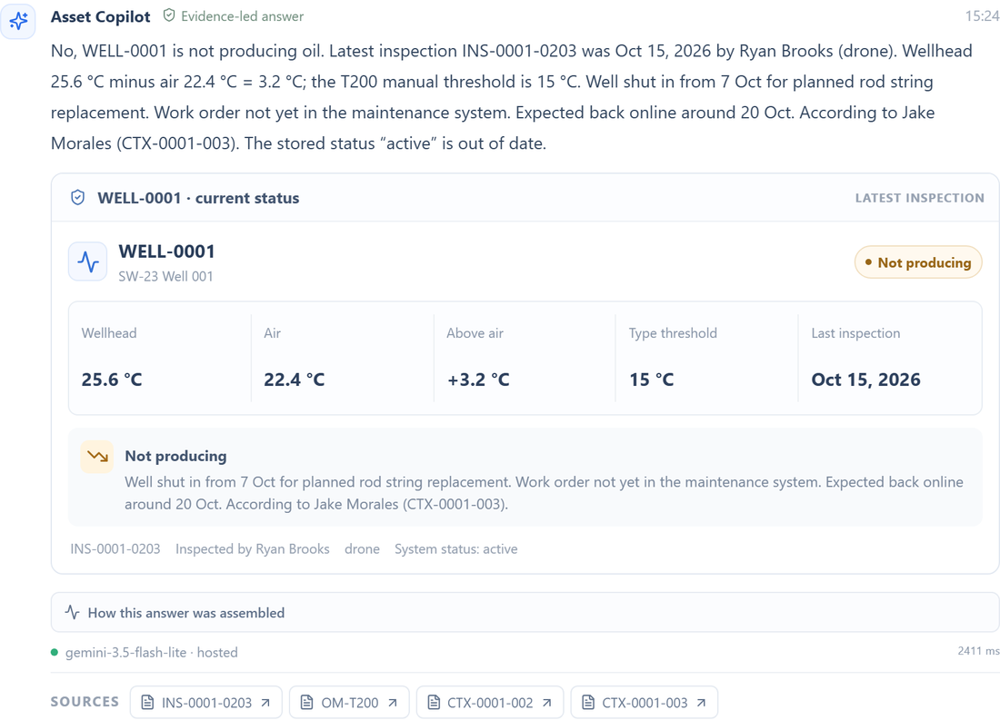
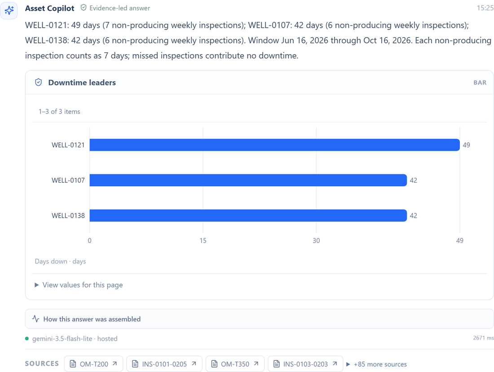
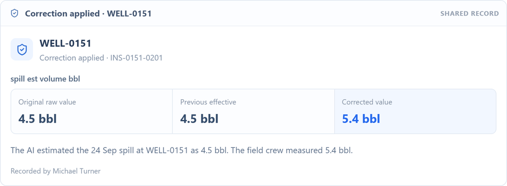
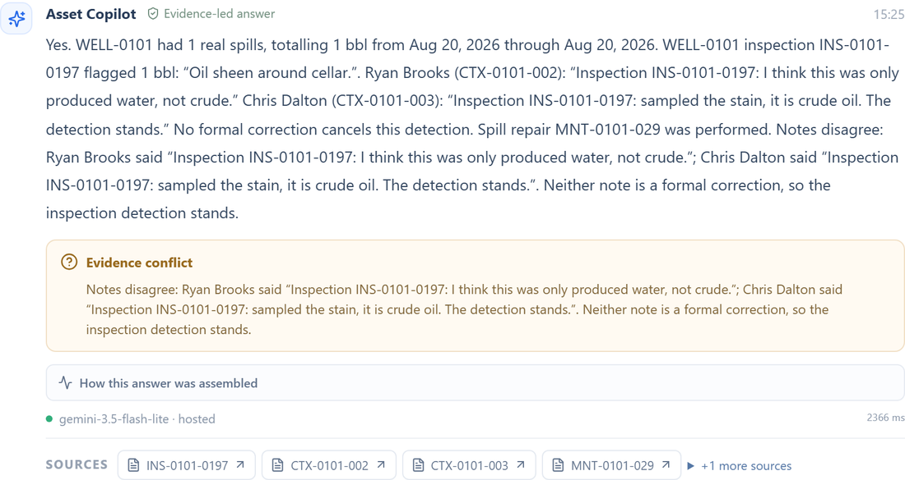

FlytBase AHC SWE Hackathon 2026
Asset Intelligence Copilot
Ask your oil field anything. Get the answer with its evidence attached.
An LLM plans one typed, validated operation. Deterministic code computes every number, table, citation and conflict from the loaded records and documents. The model never does arithmetic on domain data.
Demo
Watch it work, in under five minutes
System design, then a live multi-user scenario: corrections, conflicting evidence and per-user memory.
4:58 · 1080p · narrated, with captions burned in
Scorecard
Verified against independent oracles
Every final answer was checked against an expected answer computed straight from the raw files, not from the copilot.
Architecture
The model plans, code calculates
A plain-English question becomes one typed operation chosen from 30 (17 core, 13 document-driven). A validator rejects unknown wells, areas, dates and fields. A router sends the operation to deterministic tools over the evidence index and memory.
The answer comes back as text, a visual, citations and any conflicts between sources. If the model fails, a deterministic planner takes over and the answer is flagged.
- Rules come from documents. Deadlines, thresholds and approvals are parsed from SOPs, manuals and memos, never hard-coded, and each rule is cited.
- Two-level memory. Shared corrections and unconfirmed claims; private per-user history and display preferences.
- Honest refusals. When the data cannot answer, it says so and offers a labelled proxy.
Results
The 11 final questions
Test dataset: 600 wells, today = 15 Jan 2027. Questions run in order, exactly as written.
| Q | Topic | Copilot answer | vs oracle |
|---|---|---|---|
| Q1 | Reservoir pressure | Declines to map it: no reservoir, tubing, casing or wellhead pressure exists. Lists the real proxies and what data is needed. | Correct |
| Q2 | Best producer 2026 | No production volumes exist, so no winner is named. Labelled proxy: 52 wells tie at 53/53 weeks; downtime tie-break gives WELL-0147 and WELL-0315. | Correct |
| Q3 | Gas reports since 1 Nov | 26 reports: 17 met, 9 missed the OPS-1 response deadline (24 h; 12 h from 1 Jan 2027). | Exact |
| Q4 | Flowline bypasses | WELL-0248 allowed (MOC extended), WELL-0249 expired, WELL-0405 not approved. Past violations: 0087, 0158, 0561. | Exact |
| Q5 | Regulator letter | Scope NE Blocks 7-8, 5 bbl or more, since 1 Jun 2026: 6 spills. Compliant 0119, 0168, 0277. Not compliant 0123, 0182, 0262. | Exact |
| Q6 | Which status is right | 17 wells: 10 where a newer note wins (6 shut in, 4 restarted as "Producing (unconfirmed)"), 7 where a newer inspection wins. | Correct |
| Q7 | Operator noises (2 turns) | 175 wells noted, filtered, then ranked by a printed score. Crew picks: WELL-0263, 0219, 0202. | Same set |
| Q8 | Who told you that (5 turns) | An unconfirmed claim stays attributed and never overwrites records; private preferences stay private; second-hand claims are flagged. | Correct |
| Q9 | Six topics (6 turns) | 9 recalled pumps, Nathan Pierce's 150 wells, OPS-5 misses, a missing H2S reading. Triage across 57 wells puts WELL-0332 first. | Correct x6 |
| Q10 | What are we waiting on | 634 jobs: contractors 33%, crews 27%, weather 22%, parts 18%. Southeast Block 31 stands out for contractor waits (43% of 40 jobs; median 14 vs 9 extra days), small-sample caveat. | Correct |
| Q11 | Hotter wells | No region genuinely runs hotter. SE-31 only looks hot because 58% of its wells are T500; type-adjusted delta is within 0.05 C. | Correct |
Inside the product
Answers carry their evidence
Every answer links to source record IDs, shows how it was assembled, and surfaces disagreements instead of picking a side.



